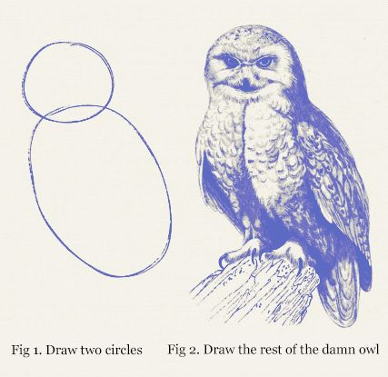

That's more or less what we're asking students to do with AI.
Week 1: vibe-code with AI, see what happens.
Weeks 2–11: figure out how it actually works.
Prereqs: one semester of coding or math.
| Phase | Weeks | What happens |
|---|---|---|
| 1. Use | 1–2 | Black box. "Feel free to ask your AI assistant." |
| 2. Understand | 3–7 | Glass box. Hand-compute. No AI on some tasks. |
| 3. Build | 8–11 | Toolbox. Same tools, different understanding. |
They use AI freely in 1 and 3. The difference is what they understand about it.
| HW | Topic | AI policy |
|---|---|---|
| 1 | Intro to DL | "Feel free to ask your AI assistant" |
| 2 | Text-to-Speech | AI encouraged |
| 3 | MNIST Deep Dive | Open-book; AI for facts only |
| 4 | Mini Text Gen | Mixed — hand-compute + code with AI |
| 5 | Build Your Own LM | Mixed |
| 6 | Computer Vision | Mixed |
| 7 | GenAI LLMs | "Use any AI at your disposal" |
Homework 3 was easy to complete using AI but very difficult to understand theoretically.
— student week-4 reflection
After studying code with AI help, students write a specification:
If you recreated it successfully, your prompt is now a good abstraction of the code.
poorvucenter.yale.edu/resource/ai-prompting-to-test-code-comprehension
| Domain | Projects | Techniques |
|---|---|---|
| Finance / Economics | 5 | RAG, sentiment analysis, ensemble ML |
| Sports Analytics | 3 | XGBoost + SHAP, clustering, object detection |
| Food / Sustainability | 2 | Computer vision (YOLOv11), embeddings + RAG |
| Education Technology | 2 | Multi-agent LLM, local RAG |
| Career / Networking | 2 | RAG, multimodal analysis |
| Computational Biology | 1 | Fine-tuned LLM (410M params) on 570K cells |
| AI Fairness | 1 | Embedding analysis, hidden layer inspection |
Before this class, I didn't realize that LLMs are basically just a ton of mathematical equations doing next word prediction. I thought there was a lot more 'magic' to it.
— demystification
I do not have an engineer background but I feel that I can communicate with them now.
— technical agency
The biggest thing I learned from this class that surprised me was the unraveling of my dependence on AI. When I allowed AI to completely take over I was frustrated by the 'slop' effect.
— trust calibration
We're at the very beginning of AI + education.
AI is extremely powerful, and it is here to stay.
I think of teaching as a prescription, so our students can build immunity under supervision for life-long learning.